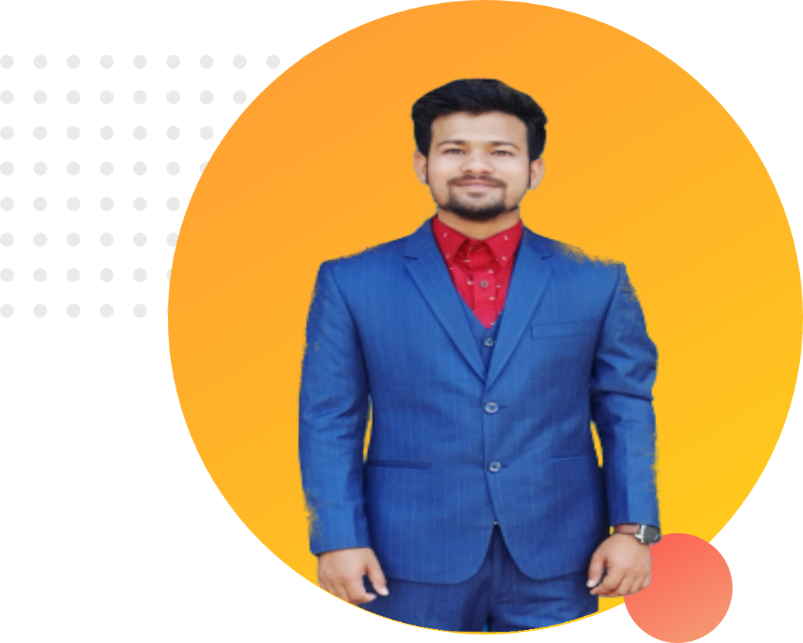

Pursuing MSS in Sociology from University of Chittagong & was involved in Freelancing, Digital Marketing, Social Activities, Extra Curriculum & Co-curriculum activities for personal & professional development.
Intended to be a result-oriented professional driven by the desire to excel development projects by utilizing new concepts, along with expertise in Program Planning, Administrative Control, Field Force Management, Communication, Process Development & Risk Management related activities.
Established record of accomplishment of managing diversified projects, business, marketing & social activities & demonstrated Confirmed expertise in surpassing goals, attaining academic objectives, and exceeding expectations of stakeholders in the different competitive arena.
Expert in Reporting, Documentation, Social Media Marketing, Networking, Teamwork, Case Solving, Project Planning, Admin, People Management, Sourcing, Purchase, Procurement, Implementation Framework, Supply Chain & Stakeholder Management.

Career Objective:
• To work in Development Sector & add value for organization & community growth
Key Proficiencies:
Complex problem solving
Emotional intelligence
Critical thinking
Judgment and decision-making
Creativity
Service orientation
People management
Negotiation
Coordinating with others
Cognitive flexibility
Date of Birth: 11 June, 1996
Academic Qualification:
Pursuing MSS in Sociology from University of Chittagong
BSS in Sociology from University of Chittagong in 2020.
HSC in Business Studies from Hathazari College with GPA 3.90 out of 5 in 2014.
SSC in Business Studies from Hathazari Parboti High School with GPA 4.50 out of 5 in 2012.
Training/Course:
Completed online course on “BEST of Digital Marketing: #1 Digital Marketing Course 2021” in 2020.
Participated 5 days’ field work on “Qualitative Research Methodology” by University of Chittagong in 2019.
3 days training course on “Attachment Program on Rural Development”, organized by Bangladesh Academy for Rural Development in 2018.
Completed course on “Social Media Marketing”.
Certification on “Digital Marketing-LEDP 2020”.
Certification on “All in One Digital Marketing” from MSB Academy.
Certification on “Affiliate Marketing” organized by Passive Journal University.
Freelance Working Experience:
1. Organization Name: Fiver
Designation: Digital Marketing Specialist
Duration: 2 years
Communicating with customers, understanding their need & serving them accordingly.
Proposing, designing & developing customized marketing offer for clients.
Design and oversee all aspects of our digital marketing department including our marketing database, email, and display advertising campaigns.
Develop and monitor campaign budgets, bid for a task & negotiate with clients.
Prepare accurate reports on our marketing campaign’s overall performance.
Coordinate with advertising and media experts to improve marketing results.
Identify the latest trends and technologies affecting our industry.
Oversee and manage all contests, giveaways, and other digital projects.
Acquired & nurtured around 8 clients & provided them customized digital marketing solution.